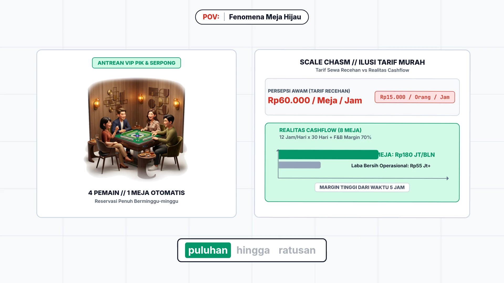

BEAT 01
00:00.0 – 00:53.9
53.991s
Beat 1

Poof, bayangin posisi lo lagi jalan malaminggu di Kauasan Rukopantai Indah Kapuk atau Gadding Serpong. Di balik pintu kaca transparan berpendingin udara, lo meninar suara gemeretak batu beradu cepat disambut tawa lepas 4 orang yang lagi duduk mengelilingi meja kain hijau. Di papan depan kasir, tertulis tarif sewa yang kelihatan sangat murah meriah, cuma 60 riburupia per meja untuk 1 jam, alias 15 riburupia saja per kepala. Tapi anehnya, daftar antreantamu di aplikasi reservasi sudah mengular panjang sampai tengah malam, bahkan ruangan privat penuh di pesan berminggung -minggung sebelumnya. Buat orang awam, ini cuma tempat non -kronksantai main permainan papan tradisional. Tapi buat pemilik ruko yang paham mesin uangnya, meja hijau otomatis ini diam -diam mencetak omset puluhan hingga ratusan juta rupia perbulan. Pertanyaannya, bagaimana bisnis yang tarifnya cuma yajahan ini bisa menghasilkan mergin fantastis?